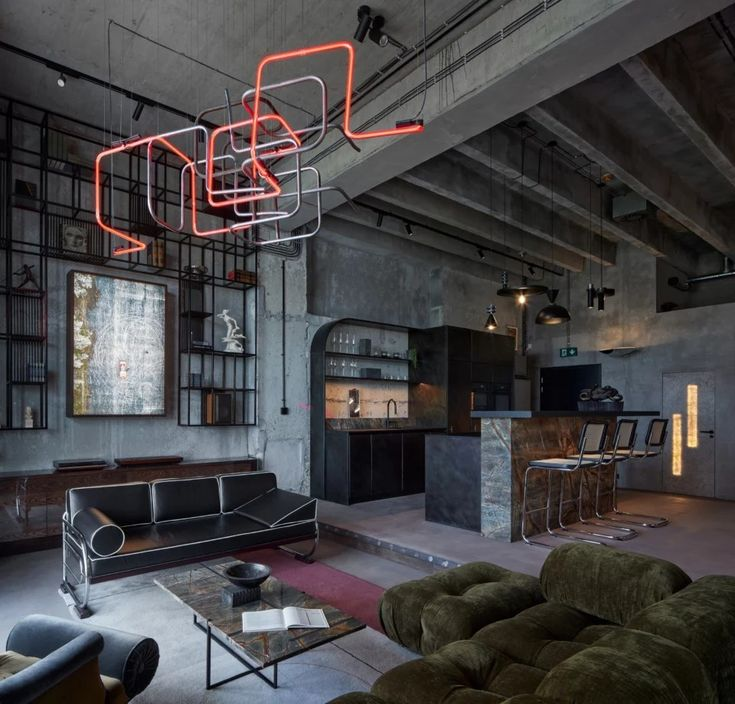

Відкриті комунікації, цегляні стіни та бетон. Лофт — це простір колишніх фабрик, перетворений на житло. Він не ховає недоліки, а робить їх частиною естетики.
Високі стелі стимулюють абстрактне мислення та творчість. Лофт дає відчуття безмежної свободи та відсутності соціальних рамок. Він підходить людям, які цінують чесність, автентичність та потребують простору для самовираження.